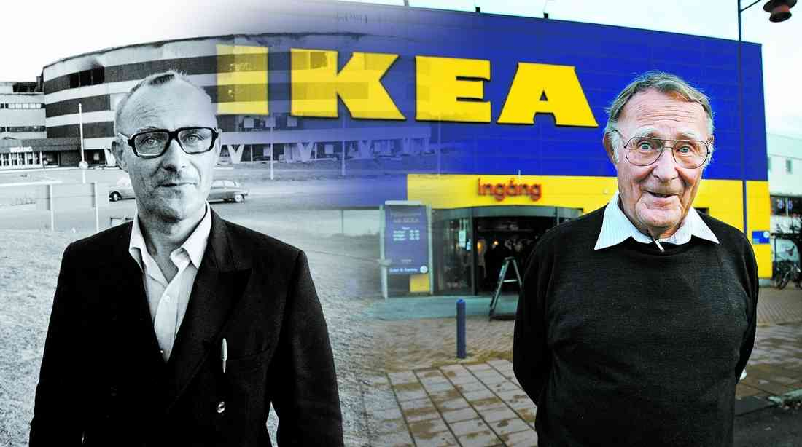

Ingvar Kamprad
The man who founded IKEA

Feodor Ingvar Kamprad (30 March 1926 – 27 January 2018) was a Swedish business magnate. He was the founder of IKEA, a multinational retail company specialising in furniture.
- 30 March 1926 - Kamprad was born in Pjätteryd (Sweden).
- 1943 - Founded IKEA in Sweden, selling replicas of his uncle Ernst's kitchen table.
- 1948 - Diversified his portfolio, adding furniture. His business was mostly mail order.
- 1960 - Kamprad married his second wife, Margaretha Kamprad-Stennert (1940–2011), whom he met when she was twenty years old.
- 1976 - While generally a private person, Kamprad had published a few notable works. He first detailed his philosophies of frugality and simplicity in a manifesto entitled A Testament of a Furniture Dealer.
- 2010 - Forbes magazine estimated Kamprad's fortune at US$23 billion, making him the eleventh richest person in the world.
- 27 January 2018 - Kamprad died in his sleep of pneumonia at his home in Småland, Sweden, at the age of 91.
Ingvar Kamprad's life:
"He lives in a bungalow, flies easyJet and 'dries out' three times a year... the man who founded Ikea and is worth £15bn"
-- Daily Mail. London, UK. 14 April 2008.